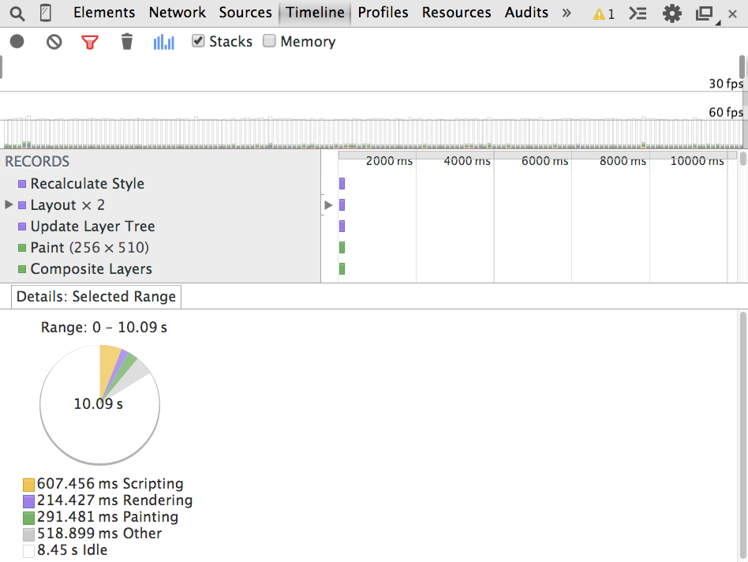
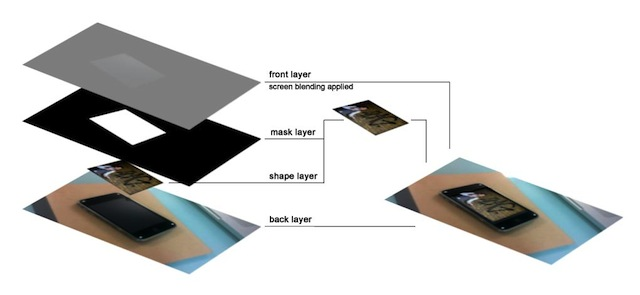
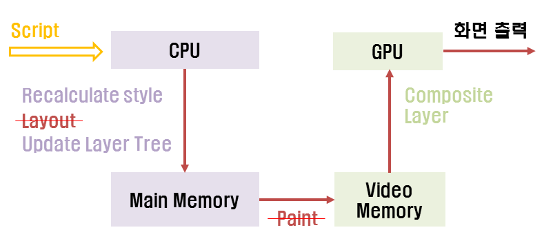
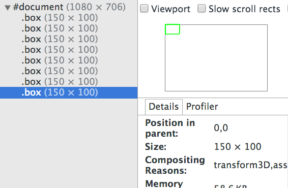
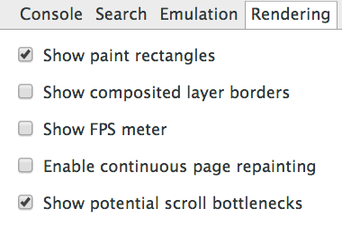
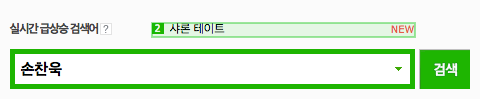
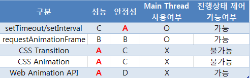

FrontEnd 개발자가 수행하는
성능 개선 작업
How to make a smooth animation
Created by 손찬욱 / chanuk.son
성능 개선하는 작업
“What you can measure, you can optimize”

Web 성능 개선 포인트
Network
Rendering
Compute
Web 성능 개선 포인트
이 발표는 Web 개선 포인트 중 랜더링에 대한 이야기입니다
크롬 브라우저 Timeline Panel
측정 -> 분석 -> 최적화-> 측정 -> 분석 -> 최적화 -> ...
크롬 브라우저 Rendering Path 이해하기
document.getElementById("box").style.height = "100px";- Recalculate Style
- height 속성 변경으로 좌표 계산이 필요한가?
- 계산이 필요하다면 Layout 발생
- 효과적인 처리를 위해 Update Layer Tree
- 계산된 영역의 정보를 비트맵으로 저장하기 위해 paint 발생
- Composite Layer 작업에서 각 레이어를 병합 후, 화면 출력
부드러운 애니메이션을 위해서는
위 작업이 모두 16.6ms 내에 처리되어야한다
크롬 브라우저의 Rendering 작업
Recalculate Style
엘리먼트에 style을 적용하기 위해 계산하는 작업
엘리먼트의 style 객체가 변경될 때 발생함
document.getElementById("box").style.transform = "translate(0px, 0px)";
크롬 브라우저의 Rendering 작업
Layout
각 엘리먼트의 위치, 크기를 계산하는 작업
width, height, left, top, offsetHeight, offsetWidth, scrollTop, 등이 변경될 때 발생함
document.getElementById("box").style.left = "100px";
document.getElementById("box").style.top = "200px";
document.getElementById("box").style.width = "400px";
document.getElementById("box").style.height = "300px";
크롬 브라우저의 Rendering 작업
Update Layer Tree
Layout을 위해, Render Tree를 변경하고,
paint를 위해 텍스쳐를 예약하는 작업
Blink에서 매번 발생.
크롬 브라우저의 Rendering 작업
Paint (Paint Setup, image encode/decode)
Layer에 엘리먼트의 픽셀 정보를 기록하는 작업
- border-radius, shadow-box,등과 같은 속성이 변경되었을 때 발생
- img의 src가 변경되어 이미지가 decode 될때 발생
- Layout 작업이 발생한 경우 발생
- 성능 병목의 주 요인
document.getElementById("box").style.borderRadius = "5px";
document.getElementById("logImg").src = "http://m.naver.com/logo.png";
크롬 브라우저의 Rendering 작업
Composite Layers
Layer를 변형하여 화면에 그리는 작업
- GPU 가속이 적용된 Layer일 경우, GPU가 담당을 한다
- transform, opacity속성이 변경되었을 때 발생
- 매번 발생함
document.getElementById("box").style.transform = "translate(0px, 0px)";
document.getElementById("box").style.transform = "translate3d(0px, 0px, 0px)";
document.getElementById("box").style.opacity = 0;
Layer 모델
웹페이지를 랜더링하기 위해 필요한 이미지 단위 요소
- 레이어들을 배치/합성하여 최종적인 웹페이지를 표현한다.
- 모든 페이지는 root 레이어를 가진다.
- 레이어의 이미지는 텍스처로서 Paint 작업시, CPU에 의해 Video Memory에 로드된다. 따라서, 레이어 생성 비용이 크고, 추가 Memory가 필요하다.
Layer 생성 조건
- 3D or perspective transform CSS properties
- 'video' elements using accelerated video decoding
- 'canvas' elements with a 3D (WebGL) context or accelerated 2D context
- Elements with CSS animation for their opacity or using an animated webkit transform
- Elements with accelerated CSS filters
- Element has a descendant that has a compositing layer (in other words if the element has a child element that’s in its own layer)
- Element has a sibling with a lower z-index which has a compositing layer (in other words the it’s rendered on top of a composited layer)
가장 간단한 Layer 생성 조건
translateZ(0);
tranlate3d(0,0,0);
Rendering 성능 개선 전략
- 필연적으로
Recalculate Style, Update Layer Tree, Composite Layer는 꼭! 발생 - Update Layer Tree, Composite Layer 의 비용은 Layout과 Paint.
그리고 Layer에 의해 결정되어진다
Layout, Paint를 줄이고, 최적의 Layer를 구성
Layout, Paint 비용 줄이기
Layout, paint를 유발하는 속성을 사용하지 않는다.
대신, GPU가 처리할수 있는 변형을 이용하여
같은 효과를 구현한다.
- left/top에 의한 이동은 transform : translate을 이용
- show/hide는 alpha값을 이용하는 opacity를 이용
최적의 Layer 구성하기
대상 DOM 노드가 주변이나 자신에 의해
자주 변경되지 않는 경우 (transform,opacity 제외) 구성

- LayerPanel이나, RenderingPanel의 show composite layer border를 통해 확인후, 불필요한 Layer는 제거한다.
- 사용하지 않는 Layer는 display:none처리
놓친 요소 찾기
크롬 Rendering 탭 활용하기

- show paint rectangles
paint되는 영역이 녹색으로 표시된다.  - show potential scroll bottlenecks
touch, mousewheel 과 같이 스크롤에 영향을 미치는 이벤트 핸들러를 표시
성능 개선 전 (데모)
성능 개선 후 (데모)
transform,opacity 이용, Layer 사용
처음 부터 Rendering 성능을
고려해서 잘 만들 순 없을까?
애니메이션을 만든다면?
다음 사항을 고려해야한다
- 애니메이션 이동 방식을 결정
- 애니메이션 제어 방식 결정
- 레이어 구성을 위한 하드웨어 가속 결정
애니메이션 이동방식
어떻게 엘리먼트의 속성을 바꿀것인가?
애니메이션 이동은 display:block/inline-block로 지정 후, transform:translate, opacity을 사용한다.
애니메이션 주기 제어 방식
언제 엘리먼트에 변경을 요청할 것인가?
- CSS Transition/Animation은 안정성 문제로,
android는 4.3이상. iOS는 6.0미만에서 사용 - iOS는 6.0 이상에서 부터는 브라우저 스크롤과 함께 사용시,
Transition End 이벤트가 발생하지 않는 문제로 CSS Transition 사용 불가
레이어 구성을 위한 하드웨어 가속
하드웨어 가속은 단말기, OS환경에 따라 적용 범위가 달라짐
- Android는 3.0부터 하드웨어 가속이 가능하나,
안정성 문제로 android 4.0 부터 선별적으로 적용 - Android 4.0은 단말기, OS 환경에 따라 안정성에 문제가 있음
- Android 4.1부터는 안정적으로 지원 가능, iOS는 3.0부터 사용가능
감사합니다.
BY 손찬욱 / chanuk.son
참조문서 (1/2)
- http://www.html5rocks.com/en/tutorials/speed/layers/
- http://www.html5rocks.com/en/tutorials/speed/high-performance-animations/
- http://www.chromium.org/developers/design-documents/gpu-accelerated-compositing-in-chrome
- http://www.slideshare.net/cwdoh/gdg-webtech-1
- https://twitter.com/aerotwist/status/498878547378053120
- http://www.html5rocks.com/en/tutorials/speed/rendering/
- http://www.html5rocks.com/en/mobile/optimization-and-performance/
- http://wesleyhales.com/blog/2013/10/26/Jank-Busting-Apples-Home-Page/